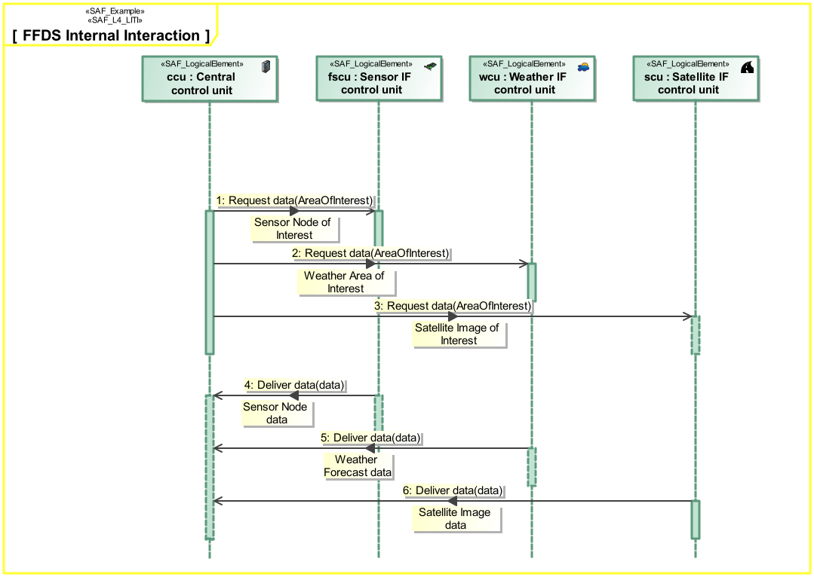

L4_LITI Logical Internal Interaction Viewpoint
| Domain | Aspect | Maturity |
|---|---|---|
| Logical | Interaction & Collaboration |

The Logical Internal Interaction Viewpoint describes System internal behavior based on the exchange between the Logical SOI Elements Usage. It depicts the sequence of interactions between the Logical SOI Elements and the exchanged Domain Item Kinds needed to accomplish a System Partial Function.
The Logical Internal Interaction Viewpoint supports the “Develop Architecture Viewpoints” and the “Develop Models and Views of Candidate Architectures” activity included in the “Architecture Definition process” activities of the INCOSE SYSTEMS ENGINEERING HANDBOOK 2015 [§ 4.4] and contributes to the System Architecture description.
A sequence diagram featuring the flow of control between Internal Logical Elements of the SOI. Note: This diagram depicts the sending and receiving of messages between the interacting entities called lifelines where time is represented along the vertical axis. The lifeline representatives are part properties typed by Logical System Elements.
The following Stereotypes / Model Elements are used in the Viewpoint: